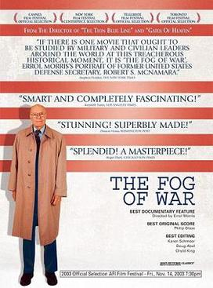

Errol Morris
2003
107 minutes
This is another Errol Morris documentary. This one is about Robert McNamara, who was well positioned to have a lot of insightful things to say about the Cuban Missile Crisis and the Vietnam War.
Most of your family were in military service at some point. You narrowly avoided it, aside from a few mandatory ROTC classes in college. Your grandfather was a Seabee in the Navy in WWII in the Pacific theater. Your father and all of your uncles served in the Army. Your father narrowly avoided the draft during Vietnam, only to suddenly and unexpectedly decide to enlist later, much to your mother's surprise and horror. There has never been a good explanation for exactly why this happened, and he never offered one to you. He simply came home and declared it a fait accompli and was off to basic training several days later. The working theory was that he did this to avoid some sort of trouble he had gotten himself in with another woman--he was notoriously unfaithful to your mother at this time.
Your father, by his own admission, was not a good soldier. He was simply not cut out for the Army. He muddled his way through basic training, and he recalled being given some sort of aptitude and affinities test to determine how he would be serving his country when they carted him off to Vietnam. He answered the questions honestly, declaring that he definitely did not enjoy camping or hiking, which they carefully considered before assigning him to be perfectly suited for front-line infantry.
While finishing up his post basic training stateside activities, he managed to step in a hole during guard duty and bust his ankle. This, combined with the frequent panic attacks he was suffering from related to your grandmother being institutionalized from her own mental health issues, led to the Army deciding that he would indeed make a poor soldier. He was miraculously gifted an honorable discharge and ejected from the Army.
Years later when preparing for his funeral, your stepmother would go through his belongings and find some of his Army records and ephemera. She would marvel in particular at the "marksman" qualification badge that he had earned in basic training--essentially the minimum standard allowed. This was greatly talked up at his funeral among the almost entirely civilian mourners, as though your dad were some secret badass sniper. The folded American flag he was entitled to as a veteran was displayed next to this medal and the urn containing his ashes and his Starbucks barista apron. Multiple mourners walked up to greet you and thanked you for his service as you cringed. Your father would have found this all laughable, and you tried to take it all in as diplomatically as you were able.
Time to choose something different: